Your pick: A (the island is the lobby, one obvious PLAY into the Arena queue) with C (a first-steps checklist). Every screen below is a real Studio playtest capture, phone (iPhone 13 Pro emulation, 844 x 390 like yours) and PC. Throwaway prototype, nothing saved to the place. The PLAY press in the queued capture used the real Arena queue.
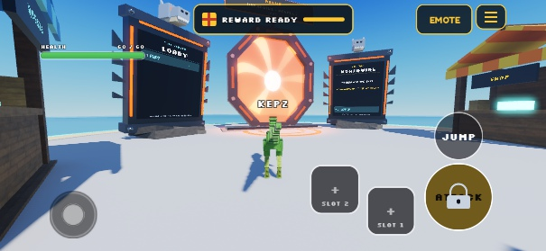
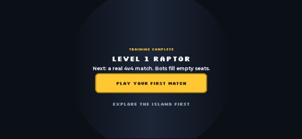
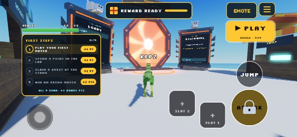
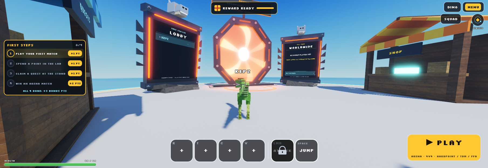
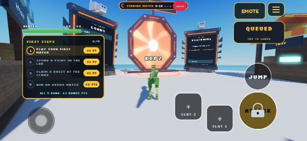
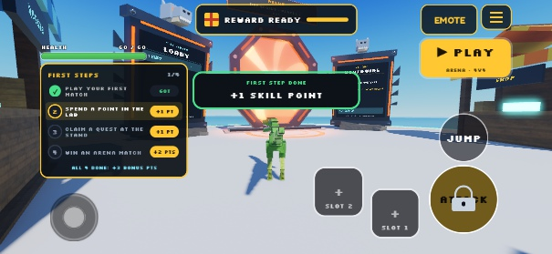
Why A: the button never moves and never covers the middle of the screen, it's where thumbs already are, and the checklist is readable at a glance. Trade-off: two separate pieces of HUD.
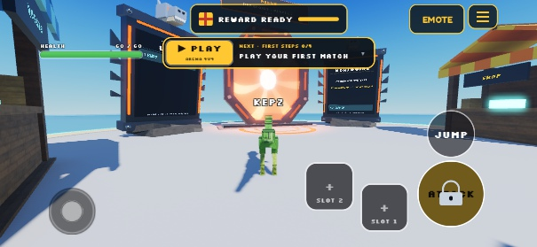
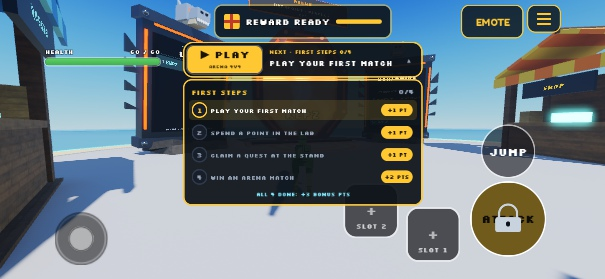
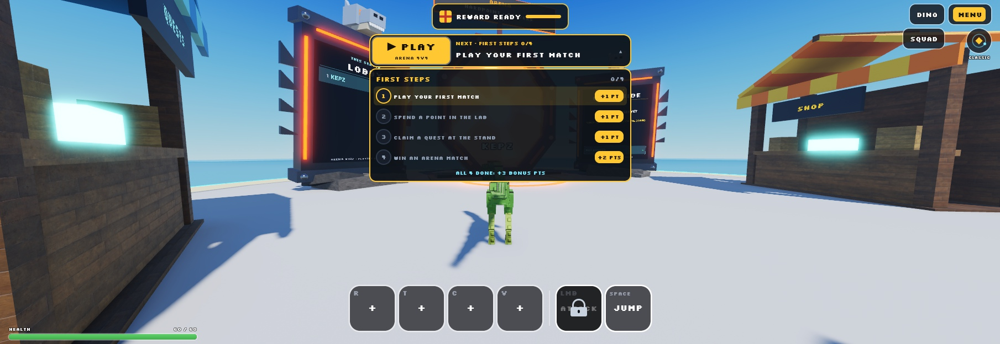
Trade-off: tidy, but PLAY is up top, away from the thumbs, and it shares the top centre with the gift timer, the queue pill and the respawn button.
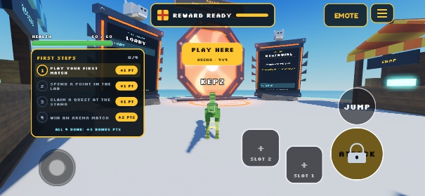
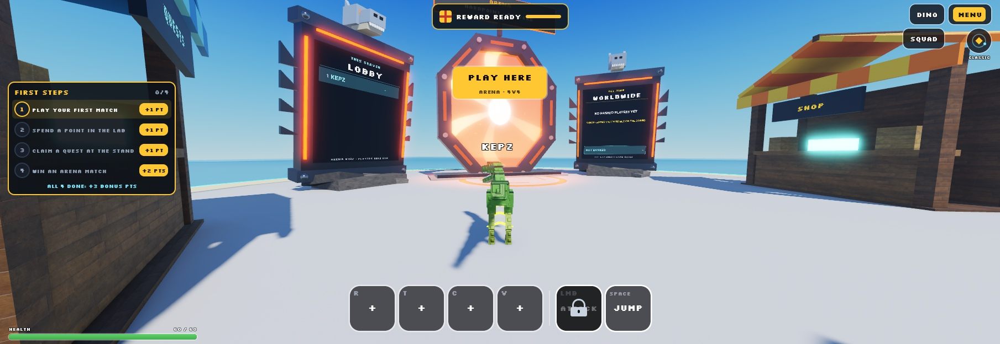
Trade-off: cheapest to build and keeps the portal special, but a new player still has to walk there every time, and the label only helps while the portal is on screen.
On phones the Arena queue pill "FINDING MATCH" draws on top of the playtime gift timer, both top centre:
Whatever option you pick, the build hides or moves the gift timer while you're queued. Flagging it because it's live now.
Roblox's own onboarding guide: teach controls and the core loop, then get players into the fun quickly, with early levels and rewards coming fast. Success is measured by Day 1 retention.
Roblox's techniques page: spotlight one button, show a trail or arrow to where to go, and give timed hints only to players who seem stuck. That's the PLAY pulse and Option C's chevrons.
Roblox's quest design guide: break features into one quest each, with the reward scaled to the effort. That's the 4-step list: one step per thing you've built (Arena, Lab, Quest Stand).
Rivals, the closest arena game, has no menu: you walk onto queue pads in the lobby, with a shooting range to practise in. That's Option C. BedWars-style lobbies use one big PLAY button that opens the queue, which is Option A. (The BedWars detail is from my own knowledge; the article I found didn't cover it.)
| # | Step | Done when | Reward |
|---|---|---|---|
| 1 | PLAY YOUR FIRST MATCH | An Arena match finishes (win or lose, bots count) | +1 skill point |
| 2 | SPEND A POINT IN THE LAB | A skill point is spent | +1 skill point |
| 3 | CLAIM A QUEST AT THE STAND | Any quest claimed at the Quest Stand | +1 skill point |
| 4 | WIN AN ARENA MATCH | An Arena win | +2 skill points |
| All 4 done | Card says FIRST STEPS COMPLETE and goes away | +3 bonus skill points |
Shown only to players who haven't finished it (saved per player). Old players who already have Arena games see it pre-ticked or not at all; your call below.
Nothing gets built until you pick.